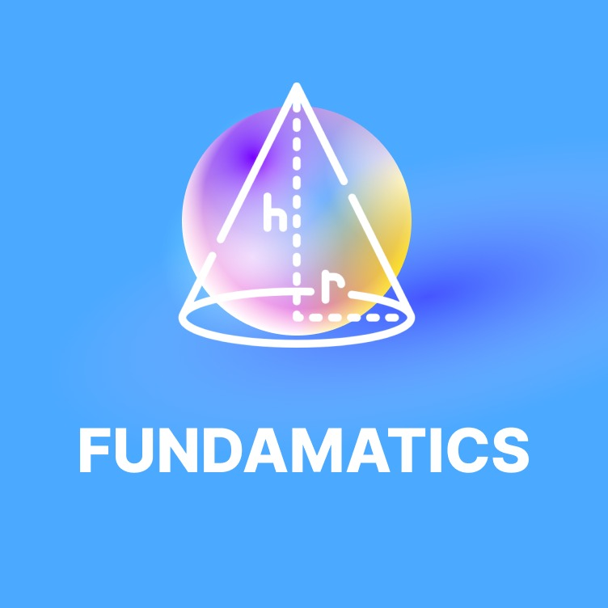
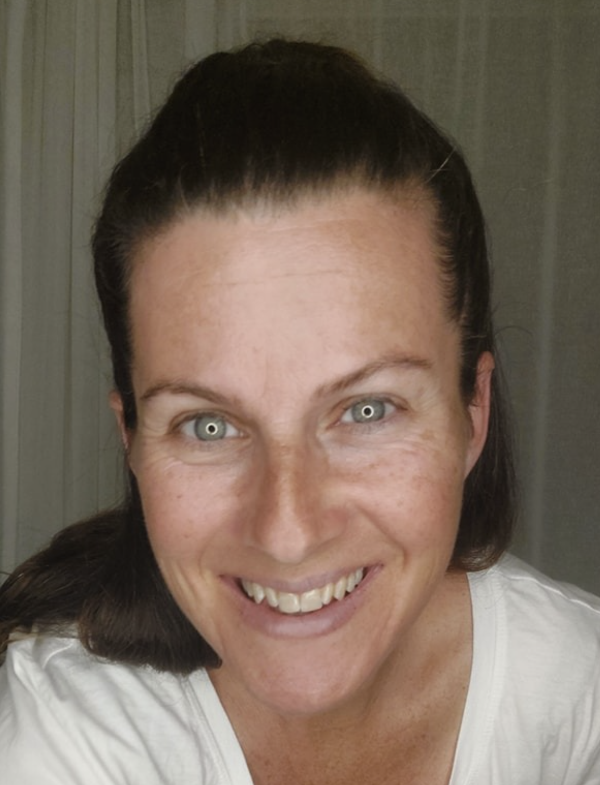

דניאלה פיק
תלמידת עבר במסגרת FUNDAMATICS.
זמרת ויוצרת עצמאית.

קהילת הבוגרים והבוגרות
תלמידת עבר במסגרת FUNDAMATICS.
זמרת ויוצרת עצמאית.

תלמידת עבר במסגרת FUNDAMATICS.
חוקרת במדעי המחשב.
נבחרה לרשימת Forbes 30 Under 30.

תלמיד עבר במסגרת FUNDAMATICS.
עוסק בתחומי Go-To-Market וניהול עסקי.

תלמיד עבר במסגרת FUNDAMATICS.
למד מתמטיקה ברמת 5 יחידות לימוד בבית הספר התיכון בליך, רמת גן.

תלמיד עבר במסגרת FUNDAMATICS.
למד מתמטיקה ברמת 5 יחידות לימוד בבית הספר התיכון בליך, רמת גן.
סטודנט באוניברסיטת בר-אילן.

תלמיד עבר במסגרת FUNDAMATICS.
למד מתמטיקה ברמת 5 יחידות לימוד בבית הספר התיכון בליך, רמת גן.

תלמיד עבר במסגרת FUNDAMATICS.
מנהל מוצר.

תלמידת עבר במסגרת FUNDAMATICS.
עצמאית.
מתגוררת בגיברלטר עם בעלה וילדיהם.

תלמיד עבר במסגרת FUNDAMATICS.
עובד כיום ב-ARO.

תלמיד עבר במסגרת FUNDAMATICS.
ספורטאי סבולת ומאמן.
בוגר Columbia Business School.

תלמידת עבר במסגרת FUNDAMATICS.
למדה מתמטיקה ברמת 5 יחידות לימוד.
בית הספר התיכון בליך, רמת גן.

תלמיד עבר במסגרת FUNDAMATICS.
למד מתמטיקה ברמת 5 יחידות לימוד.
בית הספר התיכון בליך, רמת גן.

תלמידת עבר במסגרת FUNDAMATICS.
ליווי והכנה לפסיכומטרי.

תלמידת עבר במסגרת FUNDAMATICS.
למדה בבית הספר הבינלאומי בכפר הירוק.
תכנית IB – SL AI.
זמרת-יוצרת וכותבת צעירה בזירה עיתונאית בינלאומית.

בוגרת FUNDAMATICS.
במקור מקיבוץ ניר אליהו.
מתגוררת כיום בווייטנאם עם בעלה וארבעת בניהם.
משלבת בין משפחה, יזמות והתפתחות אישית.
הופיעה בפודקאסטים ושיתפה בגישה האישית והאותנטית שלה לחיים.